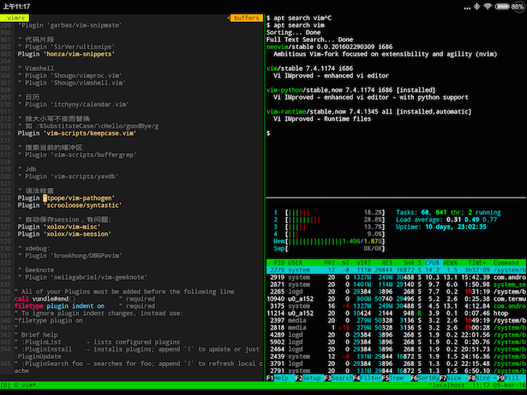

Android系统本身也是个小Linux，配合蓝牙键盘搭建个开发系统当然不成问题。好处还可以发挥小巧便携、触摸控制的好处。坏处首先就是性能比笔记本低，而且会有少量Linux中能做的这边做不到，再有就是多任务切换会比较烦人。但折腾一下还是很有乐趣的，而且特定场景会比较实用。
如果是已root的Android平板，比如三星的Galaxy tab平板，实在不用多说。安装一个Terminal IDE，成功后初始已经有不少工具了。但如果是没有root的，一开始发现处处受制，很难实现。幸好，去年最终选择买Android平板而不是iPad，也是看重自由度比较高、方便折腾的原因。
目前的低配装备是：
1、小米平板2低配版，999元；
2、蓝牙键盘＋皮套支架，128元；
3、电容笔（有用，非必要），20元；
比起Surfaces是不是便宜很多：）
1、安装Termianl IDE会失败，试过多个另外的终端应用，附带的shell命令太少，而且都没有包管理器。
2、BusyBox也装不上，所以命令行下能干的事情太少了。
3、键盘下切换不同的应用没有快捷键，不方便。
目前一番折腾后能实现的开发环境是：
1、web开发，tmux＋vim＋各种vim插件；
2、python、php作为脚本语言；
3、git作为版本控制；
4、web容器直接用php自带的了，不单独装apache了；
5、调试还是用原生应用浏览器chrome；
试用大量应用之后，介绍最有价值的几个：
这个太让我惊讶了，感觉是无root环境下最好的终端。界面简洁非常适合物理键盘不说，因为它居然自带apt包管理器！而且速度还很快。
立刻用apt install了常用的工具，都很顺利：tmux、vim、git、curl、make、python2、php。另外居然还支持zsh！
其中tmux跟vim都是神器，而vim则是开发主力，需要稍微打造一下才能成为IDE。这些是很个人化的了，看自己爱好跟需求，网上也很多别人分享过经验。每个vimer肯定都有一堆插件功跟配置，我平时用vundle管理这些插件。
先用git把我平时常用的vim配置文件拿回来，然后从github上clone下vundle插件，然后就是简单执行“:Plugin install"，一切插件安装完毕，在公司熟悉的神器又回来了，so esay！
当然也不可能这么完美，有一些插件派不上用场，还是需要去掉。有些想用却用不了的，最遗憾的就是YouComepleteMe，在本地没有安装成功。少了它会有点不爽。
小米的系统不支持alt＋tab切换应用，任务管理器也不支持键盘选择应用，非常恼火。
好不容易找到这个合适的应用，它唯一作用就是用来一键返回上一个应用。虽然是悬浮点看着碍眼，不过支持将尺寸调小、透明度调到10％，吸附到角落等，也就没那么碍眼了。
但依然不支持键盘alt＋tab按键，幸好小米系统支持自定义win键，这个应用也呼出面板中，设置默认点击win键就触发这个应用就能做到一键返回了。
可以自定义键盘的按键，我用它来交换大小写锁定键跟Ctrl，vimer们大概都会这么做吧。不过在我键盘上不是很完美，会同时触发ctrl跟大小写交换功能。
还有其他的一些自定义按键功能，可以调整自己的键盘行为，也是我一直在寻找的好应用。
这个不用多说了，本身就是简洁好用，关键还是因为完美支持键盘，不像其他产商的浏览器。
另外，chrome还有一个我很喜欢的特性：可以禁用js，而对指定的域名添加白名单。所以虽然它不想firefox一样支持Ad block等插件，但我还是不用担心满屏广告的了。不翻墙时浏览stackflow也能提高速度（少了加载被墙的google cdn的js脚本）。
不过调试web应用还是个问题，chrome虽然支持远程调试，但那时在PC上连接移动设备调试。倒是有firebug lite的js插件可能可以派上用场。以后再试试。

平时编写的代码用git管理，在家可以连接充当git服务器的树莓派，有一些也会提交到github上。有ssh去管理树莓派也很方便，不用去房间开笔记本了。
麻雀虽小五脏俱全。而最大的瓶颈，其实是小米平板2只有坑爹的2G内存（同期的小米4也有3G啊），这是硬伤。如果Temux被kill掉，其中打开的tmux也无法还原，这是跟使用一般的linux环境最糟糕的差别。
用来写写web小应用，感觉是没问题的。有需要还可以写写python或php，做一些小工具。就是调试的效率不如PC。但还是觉得蛮好玩的～